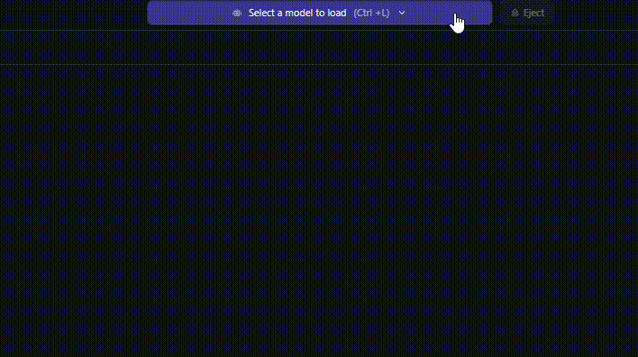

Running Locally
Surprisingly, getting an LLM on your system is much easier than you'd think it would be. You don't need a $50k computer to just do this stuff, so I'm going to assume you're using a traditional computer or a Mac. Be aware that the things you'll be able to do depend on your hardware, so be mindful of anything you might be planning to do, like if you wanted to run something heavy like Text-to-video models, you'll need a specific type of GPU.
Oh, right. I should probably cover this briefly.. Basically, you're going to run this LLM on a part of your computer called "baremetal." Baremetal consists of the three most important parts of a computer, and if you intend on using a specific model or having it run fast, you're also going to need a GPU. Here is a quick summary of how baremetal + a GPU works from yours truly:
Baremetal
- Processor (CPU) - The brains of the computer, this handles everything from running the operating system (like Windows), video game physics (if not rerouted to the GPU), and a bit of your model.
- Memory (RAM) - Short-term Storage. Faster than a hard-drive, RAM is perfect for storing and loading your model onto to have it run fast. (BE WARNED!: Due to extremely high demand for AI data centers, RAM price has skyrocketed about 2 to 4x it's current market value, due to major RAM manufacturers shutting down production on consumer grade components to focus exclusively on selling RAM to data centers.)
- Hard Drive (HDD or SSD) - Long-term Storage. Slower than memory, hard drives are excellent for storing all your models when not loaded to RAM.
Nice-to-haves
- Graphics Card (GPU) - Basically a CPU, but dedicated solely to processing intense mathematical calculations, mainly processing video games, but has become a very popular and attractive option for running AI due to having features making it easier and faster to run AI.
I didn't get everything, just the things you'll need to get working. You can find a better guide on the internet. Anyway- back to the main discussion:
Things you need - Windows/Linux
- Processor: A 6-Core processor with a base speed of around 3 GHz, with AVX support (Anything made in the last 5-7 years should do nicely).
- Memory: This very heavily depends on the model you're using, but assuming you intend to run 3-4b Models, 16GB should do nicely. I HEAVILY recommend using DDR4 or DDR5, because of it's speed for storing and running LLM's.
- Storage: Whether you have an HDD or and SSD doesn't matter, what matters is that you have at least 10-25GB free to store the software and the model.
- Graphics Card (optional): If you're not doing anything heavy, integrated graphics should suffice, but if you intend to use a GPU, it is advised to use an NVIDIA GPU, because even older cards like the GTX 960 (released in 2015) have something called CUDA, which allows accelerated performance for running LLMs.
Things you need - Mac
- Processor: Any Quad-Core Intel i5 made after 2017, or any Apple M-Series processor.
- Memory: Again, heavily depends on model used, 8GB for lower end models, 16GB for 3-4b, and everything else, get more RAM.
- Storage: 10-25GB free.
Check to make sure you fit along these specs, but know that these are soft-requirements, not hard-requirements, meaning that even if you have lower end hardware, you might still be able to run at the cost of speed and model accuracy.
The system I will be using for this demonstration has the following specs;
- Processor: Intel Core i5 13500 @ 3.6GHz 6 Core 12 Thread
- Memory: 16GB DDR5-4800 (not the best, but make use of what you got)
- Graphics: Integrated (Intel UHD 660)
Setting Up - Prerequisites
- Download the LM Studio installer
- Run the installer. It should be pretty straightforward.
- You should have something like this;

This is the layout for users after running LM Studio for the first time. Usually LM Studio will start by installing a model called gpt-oss 20b. We want to avoid that, as we will be installing our own model.
Running the model
- Install a model like Ministral 3 3B. Make sure you still have enough available memory to run the model.
- Load the model;
- Type in a prompt of your choosing and watch the magic unfold;

- And just like that, you have run an LLM on your system locally, free of charge, without the giant tech overlords watching.
This was not so hard, was it? Keep in mind this is for LLM's, not text to video or text to image models. You need a beefy GPU for those, and I do not have that.